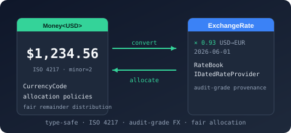

Bodu.Financial Namespace
- Packages
-
Bodu.Financial 1.3.0

Purpose
Bodu.Financial is the monetary-primitives package: type-safe money (Money<TCurrency>), runtime-tagged money (Money), multi-currency portfolios (MoneyBag), a shipped catalogue of 184 ISO 4217 currencies (in Bodu.Financial.Currencies), an exchange-rate core with both timeless and dated lookup (in Bodu.Financial.ExchangeRates), and - in the companion Bodu.Financial.Serialization.Json package - JSON converters with strict / lenient / compact policy shapes.
Reach for this library when you need monetary arithmetic that the compiler validates - adding USD to JPY should fail the build, not run with the wrong unit - and when you need audit-grade FX conversion that records which date, which provider, and which fallback policy produced a given rate.
Static documentation
- Bodu.Financial introduction - namespaces, headline types, scenarios.
- Bodu.Financial getting started - install and minimal samples for typed money, runtime-tagged money, portfolios, FX lookup, and the JSON policies.
- Bodu.Financial guides - Working with
Money<TCurrency>.
Key types
Monetary value types
- Money<TCurrency> - immutable, value-equatable monetary amount whose currency is encoded as the type parameter. Cross-currency arithmetic is a compile error. Provides arithmetic, allocation, conversion, formatting/parsing, cash rounding, minor-unit interop, and
Fraction<BigInteger>interop. - Money - runtime-tagged sister type with the same surface, where the currency is a CurrencyCode enum value (its
Codeproperty). Cross-currency arithmetic throwsInvalidOperationExceptionat runtime. Use for deserialisation and generic invoicing. - MoneyBag - immutable mixed-currency portfolio. Aggregates per-ISO balances, prunes zero balances, enumerates in lexicographic ISO order.
Currency display
- CurrencyDisplay - currency symbol / display-name formatting for presenting an amount's currency.
- The currency metadata surface - ICurrency, CurrencyInfo, CurrencyRegistry, CurrencyLookupService, CurrencyCode, and the 184 sealed tag types - lives in the
Bodu.Financial.Currenciesnamespace.
Rounding, allocation, formatting, and parsing
- IRoundingStrategy, MidpointRoundingStrategy, StochasticRoundingStrategy - the rounding-strategy contract, the midpoint (banker's / away-from-zero) implementation applied when an amount is reduced to a currency's minor units, and the statistically unbiased stochastic alternative (rounds up with probability equal to the discarded fraction;
Sharedinstance, or an injectable sampler for deterministic tests). - ScalePolicy, CashRoundingPolicy, ConversionRoundingPolicy, AllocationPolicy - policy enums that select scale, cash-rounding increment, conversion-rounding, and allocation-remainder behaviour.
- MoneyFormatter, MoneyFormatterBuilder, MoneyFormatOptions, MoneyCompactFormattingExtensions - configurable formatting: a formatter, its fluent builder, the options record, and compact (
1.2K-style) formatting extensions. - MoneyParseOptions, MoneyParseMode - parse configuration and the strictness selector for reading money back from text.
- MoneyConversionResult, MoneyBagConversionAudit<TTarget>, MoneyBagConversionRoundingPolicy - the runtime-tagged conversion result and the portfolio-conversion audit record plus its rounding policy.
- MoneyConversionResult<TSource, TTarget> - audit record bundling source and target money with the full FX lookup result.
- MoneyOfTCurrencyExchangeRateExtensions -
Convert/lookup extension methods onMoney<TCurrency>over the exchange-rate providers.
Related namespaces
- Bodu.Financial.Currencies - the runtime currency metadata surface (
ICurrency,CurrencyInfo,CurrencyRegistry,CurrencyLookupService,CurrencyCode) plus 184 sealed ISO 4217 tag types (155 active plus 29 historic / demonetised). - Bodu.Financial.ExchangeRates - the exchange-rate stack: values, series, in-memory tables, the timeless / dated provider contracts, and (via the separate
Bodu.Financial.ExchangeRatespackage) the web-provider machinery the per-source feed packages build on. - Bodu.Financial.ExchangeRates.Caching - provider-agnostic read-through caching and aggregation over any provider.
- Bodu.Financial.Serialization.Json - JSON converters and the
FinancialJsonPolicyenum (Strict,Lenient,Compact), shipped in the companionBodu.Financial.Serialization.Jsonpackage (the core library is serialization-agnostic).
Example
using Bodu.Financial;
using Bodu.Financial.Currencies;
Money<USD> dinner = new Money<USD>(54.30m);
Money<USD> tip = dinner * 0.18m;
Money<USD> total = dinner + tip; // OK - same currency
Money<JPY> sushi = new Money<JPY>(2500m);
// var oops = dinner + sushi; // Compile error - cannot mix currencies
// Fair allocation that preserves the original total exactly.
Money<USD>[] shares = new Money<USD>(0.10m).Allocate(3);
// [0.04, 0.03, 0.03]
Notes
- Currency in the type system.
Money<USD>andMoney<JPY>are different types. The compiler enforces same-currency arithmetic;Convert<TTarget>(rate)is the explicit cross-currency boundary. - Banker's rounding default. Construction rounds to
TCurrency.MinorUnitsusingMidpointRounding.ToEven. Pass an explicitMidpointRoundingto opt out. - Audit-friendly FX. Dated lookups return RateLookupResult carrying the provider name, the date actually used, the offset-day distance from the requested date, the resolution policy that fired, and an inversion flag.
- Sub-minor-unit precision.
Money<T>.ToFraction()/FromFraction()/MultiplyExact()round-trip throughFraction<BigInteger>so chained multiplications and divisions do not accumulate rounding error. SeeFraction<T>. - Zero balances are pruned.
MoneyBagremoves zero balances on every operation, so equality and enumeration are stable across insertion order and across serialisation round trips. - See also: the
Money<TCurrency>guide, theBodu.Financial.Currenciesreference, and theBodu.Financial.Serialization.Jsonreference.
Namespaces
Classes
- FinancialOptions
Configuration-bindable options for the Bodu.Financial dependency-injection surface.
- FinancialServiceBuilderExtensions
Provides the fluent registration surface for IFinancialServiceBuilder: currency lookup, named monetary contexts, and exchange-rate providers.
- MidpointRoundingStrategy
An IRoundingStrategy backed by a MidpointRounding mode, rounding via Round(decimal, int, MidpointRounding).
- MonetaryContext
Carries the rounding and scaling policy applied at a monetary operation boundary - multiplication, division, conversion, allocation, and the conversion of a high-precision calculation back to a settlement value.
- MoneyBag
Aggregates monetary balances across multiple currencies. Immutable; every mutator returns a new instance.
- MoneyFormatOptions
Configures how a MoneyFormatter renders a monetary value. Translates to the format-specifier vocabulary understood by Money and Money<TCurrency>.
- MoneyFormatter
Renders Money and Money<TCurrency> values according to a fixed MoneyFormatOptions, translating the options into the format-specifier vocabulary of the monetary types.
- MoneyFormatterBuilder
Fluently composes a MoneyFormatter for complex formatting scenarios.
- MoneyParseOptions
Configures how Parse(string, MoneyParseOptions) and its
TryParsecounterpart interpret monetary text.
- ServiceCollectionExtensions
Provides the
AddFinancialServiceentry points that register the Bodu.Financial services into an IServiceCollection and return a fluent IFinancialServiceBuilder.
- ServiceProviderExtensions
Provides the connector that promotes the container-registered ICurrencyLookup to the ambient CurrencyResolution default, so the runtime-tagged Money resolves currencies through the application's configured catalogue.
- StochasticRoundingStrategy
An IRoundingStrategy that rounds a value up or down probabilistically, with the probability of rounding up equal to the fractional part discarded at the target scale. Over many roundings the expected value equals the raw amount, so the convention is statistically unbiased and does not accumulate the directional drift that a fixed midpoint rule can introduce across a long series of operations.
Structs
- CalculatedMoney
Represents a high-precision, runtime-tagged monetary amount whose rounding is deferred until it is converted back to a settlement Money.
- Money
Represents an immutable monetary amount whose currency is identified at runtime by ISO 4217 code, in contrast to Money<TCurrency> where the currency is a type parameter.
- MoneyBagConversionAudit<TTarget>
Bundles the aggregated total produced by a dated bag conversion with the full per-line audit trail.
- MoneyBagConversionLine
Captures the per-line audit metadata produced by ConvertToWithAudit<TTarget>(IDatedRateProvider, DateOnly, RateLookupOptions?, MoneyBagConversionRoundingPolicy) for a single source currency in the bag.
- MoneyConversionResult
Captures the audit trail of a single runtime-tagged currency conversion: the source and settled target amounts, the exchange rate applied, the monetary context that governed rounding, and how much rounding moved the result.
- MoneyConversionResult<TSource, TTarget>
Bundles the result of a single end-to-end strongly-typed money conversion together with the exchange-rate metadata that produced it, so consumers can audit which observed rate was used.
- Money<TCurrency>
Represents an immutable monetary amount denominated in the currency identified by
TCurrency.
Interfaces
- IFinancialServiceBuilder
Defines the fluent registration surface returned by AddFinancialService(IServiceCollection, IConfiguration?, string) , mirroring the
IHttpClientBuilder/IMvcBuilderpattern.
- IRoundingStrategy
Rounds a raw monetary amount to a given number of fractional digits. Implementations encapsulate the rounding convention applied at operation boundaries - banker's rounding, away-from-zero, and so on.
Enums
- AllocationPolicy
Specifies the algorithm a MonetaryContext uses to distribute residual minor units when allocating a monetary amount across shares.
- CashRoundingPolicy
Specifies whether a MonetaryContext snaps results to the currency's physical cash denomination.
- ConversionRoundingPolicy
Specifies when a MonetaryContext rounds the result of a currency conversion.
- CurrencyDisplay
Specifies how MoneyFormatter renders the currency designator alongside the amount.
- MoneyBagConversionRoundingPolicy
Selects the rounding policy used by ConvertTo<TTarget>(IRateProvider, MoneyBagConversionRoundingPolicy) when aggregating per-currency balances into a single target-currency total.
- MoneyParseMode
Specifies how MoneyParseOptions interprets monetary text.
- ScalePolicy
Specifies the fractional-digit scale a MonetaryContext rounds to at an operation boundary.